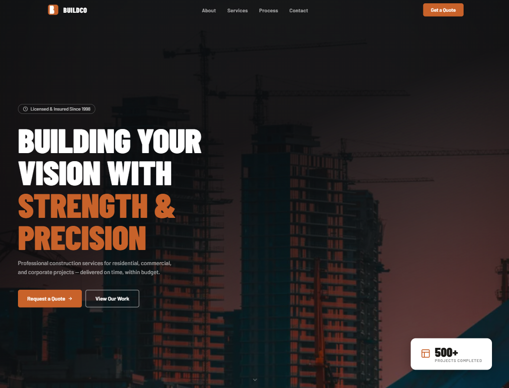
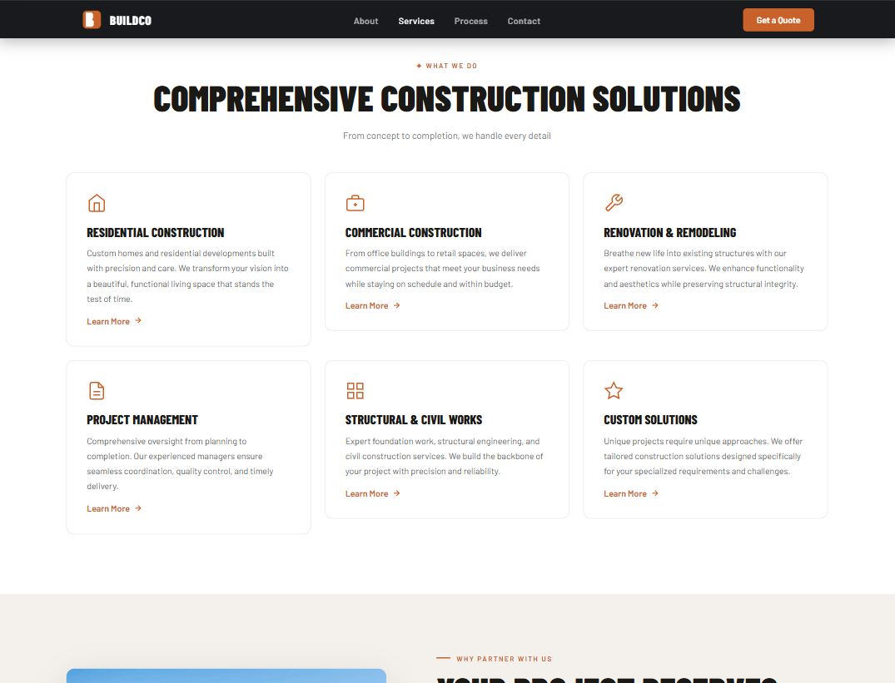
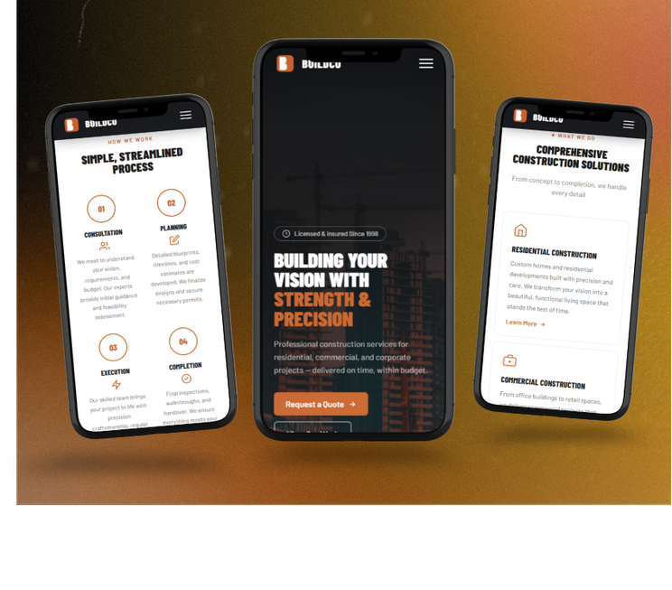

Quote request form
Multi-field form with Zod validation, clear error states and a simple submission flow.
Case study: Construction company website
A construction company site built around one job: a quote request form that collects the right details up front.
A construction site has one job: get the visitor to reach out. The form has to make that next step feel easy.
The form had to be detailed enough to be useful to the company, but short enough that visitors wouldn't abandon it halfway.
I used Zod for validation so bad data is caught early, and grouped the fields into steps (project type, details, contact) so it doesn't feel like a survey.
Multi-field form with Zod validation, clear error states and a simple submission flow.
Residential, commercial, renovation and structural work, each with enough detail to build confidence.
Every section adapts to mobile, tablet and desktop, including the form.



I picked the single most important action (requesting a quote) and planned each section backwards from it.
Fields are grouped logically, with clear labels and placeholders so users know what is asked and why.
A schema checks every submission before it is processed, which means fewer incomplete entries.
I built the services section to be clear without overwhelming, and tested the form on a phone.
Open the deployed project or go back to my other work.